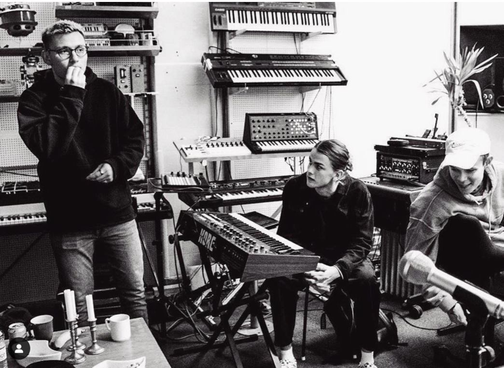
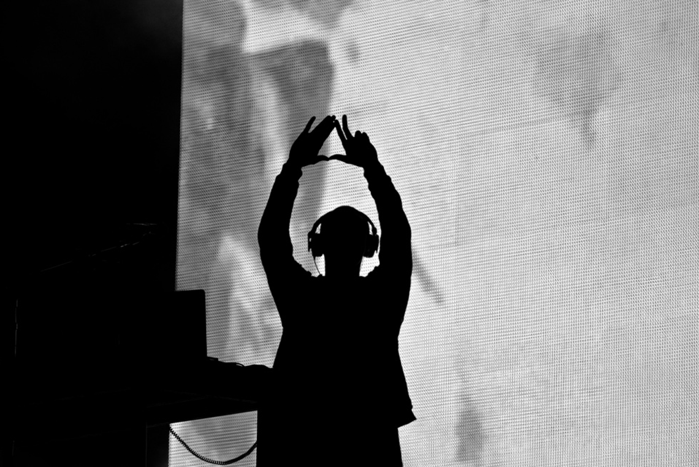
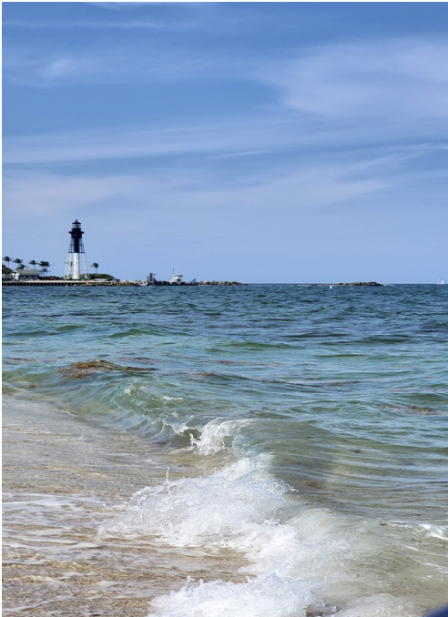

Berømte producere
Lou X Two
1998 - nu
Lasse Qvist er en kendt producer fra den lille landsby I Jylland ved navn Kolding. Lasse har produceret for store musikere som Bad Bunny og Chris Brown. Lasse producere mest RnB musik og har tidligere gået på musikkonservatoriet, men droppede ud da han følte sig overkvalificeret.
Kanye West
1977-nu
Kanye west er en kendt musikproducer fra Chicago. Tidligere gift med realitystjernen kim kardashian. Fra TV-showet ’Keeping up with the Kardashians’ han begyndte efter sigende hans musikkarriere i 1996.
En vild karriere
Hvis der er en mand, som musikindustrien kender for at lave ikke kun vildt musik, men også vilde handlinger, så er det Kanye West. Alt fra overfaldning af paparazzier til tilsvining af andre artister til prisoverrækkelser.
Kodak Black
1997-nu
Bill Kahan Kapri, bedre kendt under sit kunstnernavn Kodal Black, er en amerikansk rapper og musikproducer. Vokset op ved Pompano Beach, Florida USA. Han fik den første anerkendelse med sin single No Flockin, som blev udgivet i 2014.
